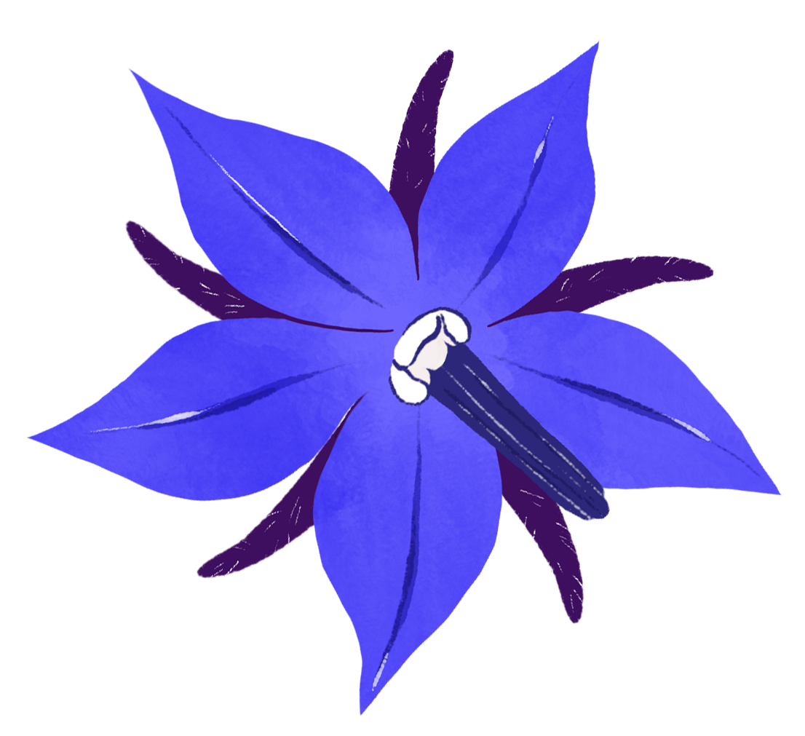
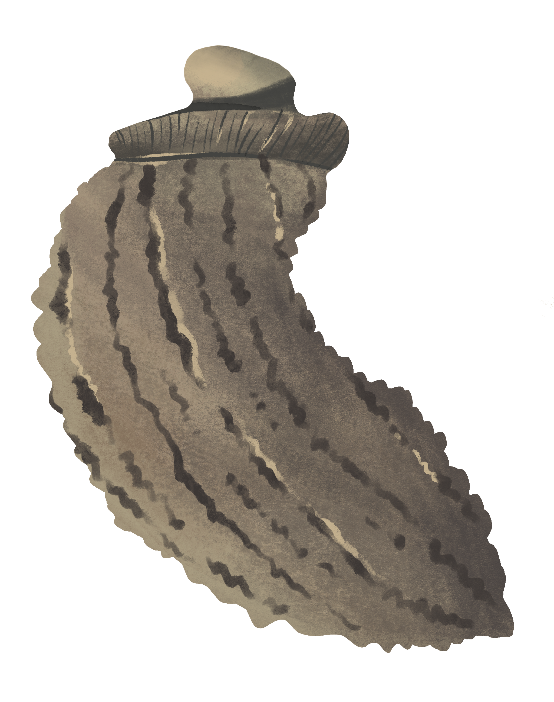
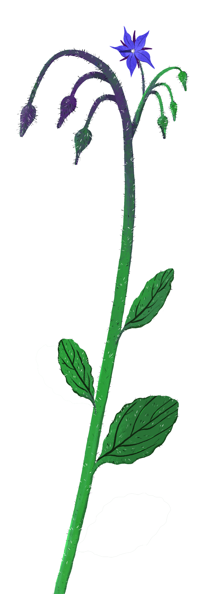

MALVA
Malva sylvestris
MALVACEAE
MORFOLOGIA
Pianta erbacea perenne o biennale alta anche 80 cm, con fusti legnosi, alla base, striati e un po' pelosi. Le foglie sono pentagonali, con picciolo lungo e di forma lobata, i fiori sono rosa o lilla con venature longitudinali porporine e i frutti a corona appiattiti hanno piccoli semi interni.
HABITAT
Si trova in tutto il mondo, comunissima anche in Italia cresce bene nei campi, nei terreni erbosi, negli orti, nei campi e anche in città.
CUCINA
Le foglie tenere e i petali, raccolti da maggio a settembre, sono usati in risotti, oppure in omelette, nelle minestre o in minestre.


